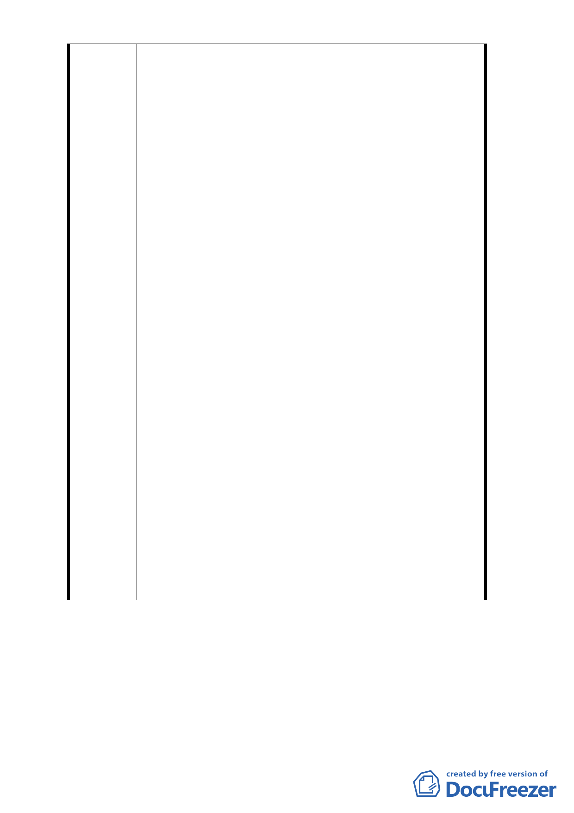

四、前述說明參照 80/2/13 經台北市政府審定公告都市計
畫說明書所示之工務局 78/11/2 專案小組第六次會議
紀錄的研獲結論「…工務局提出並經評估的七個不同
使用強度面積比較表中，建議採用第二或第六欄較佳
且較可行。今綜合各委員的發言要旨及各單位意見，
基於民間大街廓整體規劃與開發之進步作法，在台北
市係屬首創值得獎勵…」及研獲結論四「本案適用之
容積率，原則上擬請依照「京華再開發計畫不同使用
強度建築面積比較表」之第 6 欄，參照本市有關綜合
設計放寬規定及建築物增設室內公用停車空間鼓勵
要點之精神予以鼓勵，仍請裁決（其容積率依整個基
地面積計算為 548.8%，若依捐獻後所餘土地面積計
算則為 784%）…」，足資證明 80/2/13 台北市政府審
定公告都市計畫說明書所示之容積率依照工務局於
78 年 11 月 2 日第六次專案小組會議所提（78.10.27
製表）「京華再開發計畫不同使用強度建築面積比較
表」方案之第六案，此確為本計畫範圍土地容積率計
算之依據。
五、計算說明對照 80/2/13 都市計畫說明書上所示『容積
率依工務局於 78/11/2 第六次專案小組會議所提（
78/10/27 製表）「京華再開發計畫不同使用強度建築
面積比較表」之第六案計算【即容積率依整個基地面
積計算為 392% （70％×560%）】，非常清楚，故比較
表第六案並非僅僅是參考資料，並可確認容積率為
560％。
六、且都市計畫說明書上亦載明「…，但不應損及其原已
申請執照之樓地板面積（共 120284.39 平方公尺）為
標準…」，此應有信賴保護原則之適用。
附件一：80/2/13 經台北市政府審定公告都市計畫說明書
附件二：78/11/2 專案小組第六次會議紀錄。
附件三︰78/10/27 製表「京華再開發計畫不同使用強度建
築面積比較表」。
- 26 -